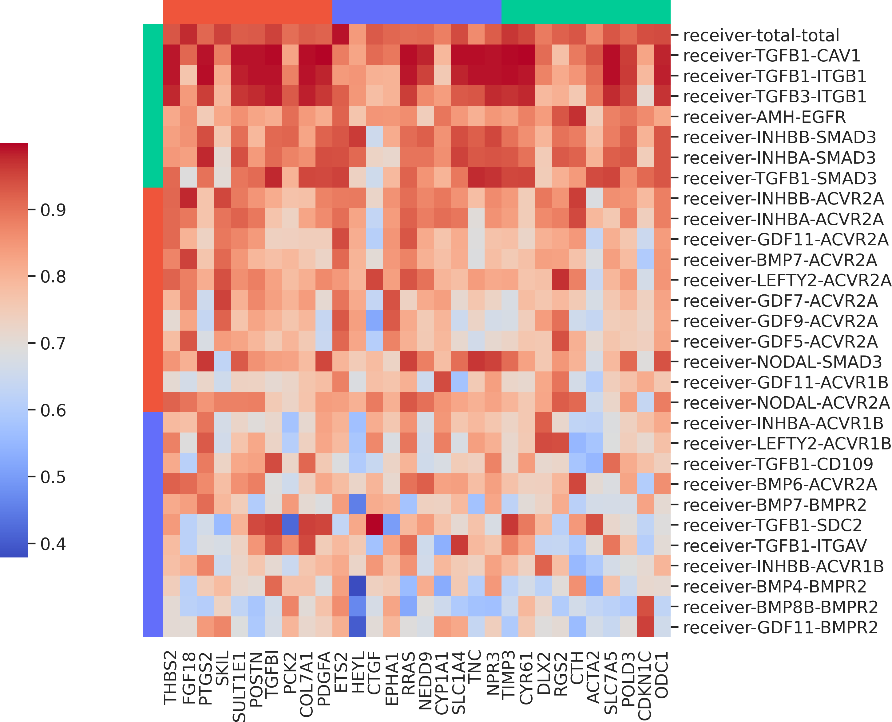

commot.pl.plot_communication_impact
- commot.pl.plot_communication_impact(df_impact, summary=None, show_gene_names=True, show_comm_names=True, top_ngene=-1, top_ncomm=-1, colormap='rocket', font_scale=1.4, filename=None, cluster_knn=5, cluster_res=0.5, cluster_colormap='Plotly', linewidth=0.0, vmin=0.0, vmax=1.0)
Plot communication impact obtained by running the function
commot.tl.communication_impact().- Parameters
df_impact (
DataFrame) – The output fromtl.communication_impact.summary (
Optional[str]) – If ‘receiver’, the received signals are plotted as rows. If ‘sender’, the sent signals are plotted as rows. If None, both are plotted.show_gene_names (
str) – Whether to plot gene names as x ticks.show_comm_names (
str) – Whether to plot communication names as y ticks.top_ngene (
int) – The number of most impacted genes to plot as columns. If -1, all genes indf_impactare plotted.top_ncomm (
int) – The number of communications with most impacts to plot as rows. If -1, all communications indf_impactare plotted.colormap (
str) – The colormap for the heatmap. Choose from available colormaps fromseaborn.font_scale (
float) – Font size.filename (
Optional[str]) – Filename for saving the figure. Set the name to end with ‘.pdf’ or ‘png’ to specify format.cluster_knn (
str) – Number of nearest neighbors when clustering the rows and columns.cluster_res (
float) – The resolution paratemeter when running leiden clustering.cluster_colormap (
str) – The qualitative colormap for annotating gene cluster labels. Choose from ‘Plotly’, ‘Alphabet’, ‘Light24’, ‘Dark24’.
{kind=link}